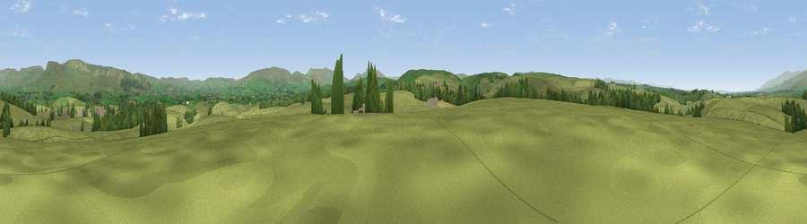

Tewfill Hill
#17803 in England · top 57% of its area beats it · near SoulbyWhere it is
The exact computed spot (NY 72330 12696). Click the marker for map links.
The view, rendered

A 360° render of this exact spot computed from the terrain model, tree cover and land cover — summer colours, afternoon light, calibrated against photographs of famous viewpoints. Real trees, hedges and buildings will differ in detail.
The panorama
Grey silhouette: terrain skyline in each direction (720 bearings, Earth curvature and refraction included). Dashed green: skyline with trees (+15 m) and buildings (+8 m) as obstacles. Blue strip: how far the ground is visible on each bearing.
Where the view opens
Wedge length = distance to the farthest visible ground on that bearing (vegetation-aware). Rings at 10, 25 and 50 km.
What fills the view
91% grassland · 7% woodland ·
Angular shares of the visible panorama (visual magnitude), not map area. Landscape diversity 0.15 (0–1 Shannon).
Key numbers
More beautiful places nearby
The staircase of upgrades: each row has a higher view potential than everything closer. Driving times are estimates from straight-line distance, calibrated against real road routing — check an actual route before setting out.
| Place | Direction | Drive | Score |
|---|---|---|---|
| Viewpoint near Crosby Garrett | S · 2 km | ~6 min | 59.8 |
| Viewpoint near Great Asby | WSW · 3 km | ~7 min | 60.6 |
| Trickle Banks | N · 3 km | ~8 min | 61.4 |
| Viewpoint near Crosby Garrett | S · 5 km | ~10 min | 69.3 |
| Viewpoint near Brough | NE · 7 km | ~15 min | 72.7 |
| Viewpoint near Hilton | NE · 8 km | ~16 min | 73.7 |
| Viewpoint near Hilton | NNE · 8 km | ~16 min | 75.2 |
| Randygill Top | SSW · 13 km | ~24 min | 76.0 |
54.50881, -2.42885 · source: osm peak · position refined by local search. Computed location — check access rights before visiting.